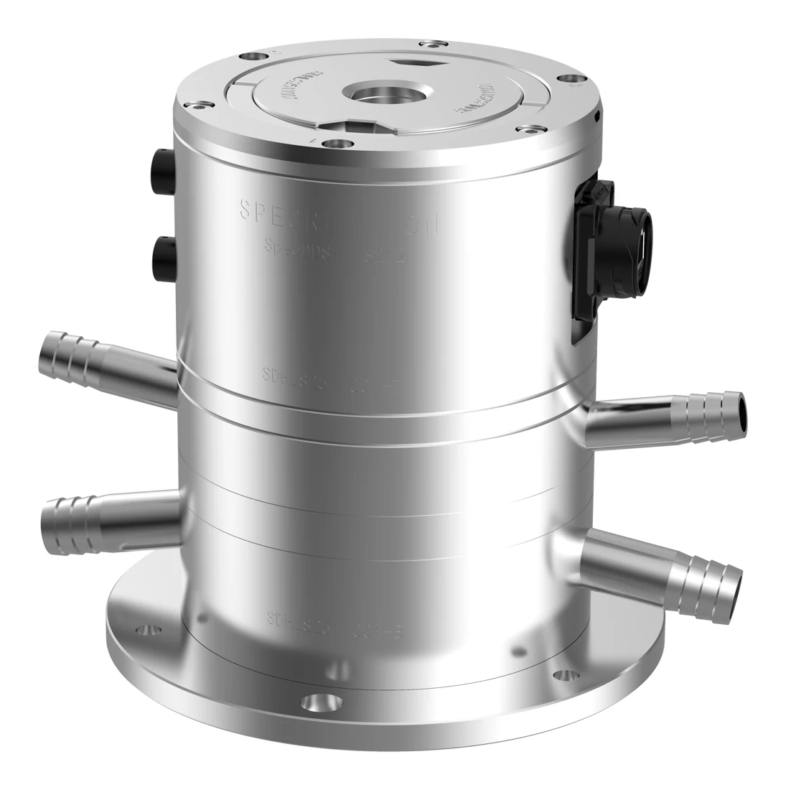

电容测量与温度补偿
以液面作为测量参考，读取微小间距变化；结合电容数字转换技术与温度补偿算法，提高环境适应性。
PRECISION IN EVERY MICRON
HLS 精密测量与姿态监测
以连通液面为基准，通过电容微位移测量，
持续监测加速器、储存环及工程结构的相对高程变化。

微米级位移感知
本次产品资料测试结论
资料中实测总量程大于 12 mm
PRODUCT & SYSTEM
面向长期运行，优化结构接口、信号链与软件操作。
一体化钵体，集成液位测量、信号采集与通讯。图片来自产品介绍 PPT。
以液面作为测量参考，读取微小间距变化；结合电容数字转换技术与温度补偿算法，提高环境适应性。
支持 CAN 与以太网通讯。新版资料介绍了主控、TCP / PoE 模块升级，以及水 / 气快接和走线优化。
优化屏蔽、等位与接地布局，减少信号串扰与地环路；重构软件主页，支持界面及功能定制。
采集间隔与 PT100 信息来自官网。具体接口、通讯组合及交付配置按项目确认。
HOW IT WORKS
调节测点位移，观察电极与液面间距如何变化。
同一种液体、气压平衡且液路畅通时，各容器的自由液面处于同一重力等位面。在局部示意中，液面表现为水平线。
水管连通各钵体中的液体，气管平衡液面上方压力。系统达到静力平衡后，液面提供测量参考。
以平行板近似理解，C ≈ εA / d。电极靠近液面时，间距减小、电容增大；标定与补偿后得到液位读数。
对比测点与基准点的间距变化，可消除理想共同液位项。系统整体等量下沉时，需要外部稳定基准才能识别其绝对位移。
原理依据：创谱官网的电容微位移 / CDC 技术介绍、合肥光源公开研究中的水管与气管连通结构，以及 JACoW 会议论文的非接触电容间距测量模型。动画为原理解释，未复刻仪器内部结构和厂家专有算法。
精密监测需关注温度分布、气压差、管路气泡、液路通畅、蒸发与安装稳定性。现场应完成标定、初始液位设置、充分静置和基准点选择。
合肥光源电容式静力水准研究 ↗JACoW：非接触电容测量模型 ↗MEASUREMENT & VALIDATION
查看产品资料中的原始图表与测试现场。
PPT 第 7 页：步距分布散点图与统计分析图。
LONG-TERM MEASUREMENT
产品资料包含长期采集及补偿前后对比图。点击不同视图查看原图，了解环境变化与测量结果的关系。
资料来源：PPT 第 10 页。补偿效果与测试工况有关，图示不构成所有环境下的性能保证。
首页与测试结论采用本次 PPT（封面日期 2026.05.10）：分辨率 ≤2 μm、精度 ≤5 μm、实测总量程大于 12 mm。PPT 第 8 页正文存在 μm / mm 等单位笔误，本页按该页明确结论展示，未将笔误用于参数计算。
官网页面采用另一参数口径：测量范围 ±6 mm，精度 ≤0.2% F.S，重复性 0.1% F.S，采集间隔 5 s–1 h，环境测温 PT100。官网口径与本次 PPT 的批次、测试条件未注明一致，未合并换算。具体技术指标以双方确认的交付文件为准。
查看官网产品资料 ↗APPLICATIONS & PLANNING
从光源装置到工业平台，选择布设方式并生成沟通用方案。
加速器现场布设 · PPT 第 4 页
沿隧道或光束线设置多个测点，连续监测基础与支撑结构的相对高程变化，为准直调整提供数据。
布局为方案示意，连线不表示实际管路比例或固定设备容量。安装标高、液路走向及参考点需结合现场确定。
合肥先进光源、重庆超瞬态光源、合肥同步辐射、上海 SHINE 装置、散裂中子源及汽轮机组轴系测量。
以上按本次 PPT 的应用情况整理。本页可离线运行，图片、样式与交互脚本均内置。原理演示、图片放大、测试图切换及方案导出无需联网；官网链接和邮件联系需要外部应用或网络。
原理动画与方案布局为说明性示意。资料整理日期：2026.10.17。